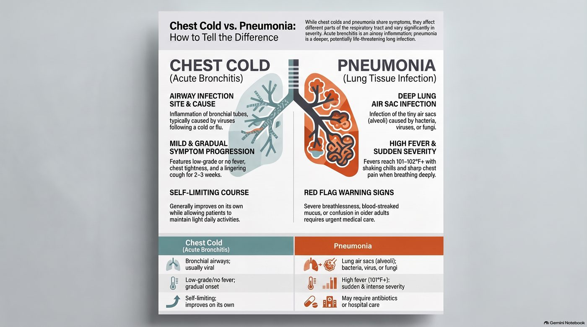

Pneumonia vs. a Bad Chest Cold: How to Tell the Difference
Chest colds (often acute bronchitis) and pneumonia can feel similar—cough, chest discomfort, fatigue—but pneumonia is an infection of the lung tissue itself and can become serious, while a chest cold usually stays in the airways and improves on its own.

Chest cold vs. pneumonia at a glance — site of infection, fever pattern, and red-flag warning signs.
What each one actually is
Chest cold (acute bronchitis): Inflammation of the bronchial tubes (the airways that carry air into your lungs). It's usually viral and often follows a common cold or flu.
Pneumonia: Infection and inflammation of the lung tissue (the tiny air sacs, or alveoli). It can be caused by bacteria, viruses, or fungi and may require antibiotics or hospital care in higher-risk people.
Because both cause cough and chest symptoms, the key is looking at the pattern and severity of symptoms, your risk factors, and how quickly you're getting worse.
Symptom checklist: chest cold vs pneumonia
Use this as a guide, not a diagnosis.
More typical of a chest cold (acute bronchitis)
Cough that may start dry, then become productive (with mucus)
Mucus that's clear, white, yellow, or green
Low-grade fever or no fever
Chest tightness or soreness from coughing
Wheezing or a "rattly" chest
Symptoms often build gradually over a few days
You generally feel unwell but can still do light activities
Cough can linger for 2–3 weeks even as you improve
More typical of pneumonia
Higher fever (often 101–102°F / 38.3–39°C or more), sometimes with shaking chills
Cough with thick yellow/green mucus, sometimes rust-colored or blood-streaked
Shortness of breath, especially with minimal activity (e.g., walking across a room, climbing a few stairs)
Sharp chest pain that worsens when you breathe deeply or cough
Fast breathing or fast heartbeat
Marked fatigue, weakness, or confusion (especially in older adults)
Symptoms may come on more suddenly and feel "more serious" than a usual cold
In older adults: confusion, dizziness, or worsening of existing conditions may be the main sign
A simple rule of thumb: if you feel much more breathless, more feverish, and more "toxic" than you would with a normal bad cold, think pneumonia and get checked.